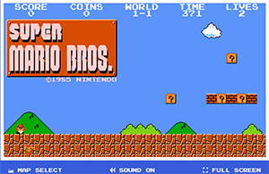
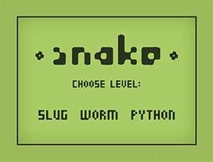

Squid Game: For the final project, I'm planning to improve my Game On! studio project. I want to add animations and more elements to the game.
Comparison 1

Nintendo Super Mario
I aimed to make my game similar to Nintendo's Super Mario interface. I wanted to use 2-bit characters and use the aesthetics of old-time video games. Super Mario's website is exactly what I was looking for inspiration. The interactions in the game are very clear and intuitive. The fonts for the provided information are clear. The game does not have any large blocks of text which makes it enticing for players. The sound off button helps users to mute in case they don't want the background sounds. One thing that I notice in the Super Mario game is the use of very bright colors. Even though the colors are a part of their USP, I feel the colors could be adapted to more modern ones.
Comparison 2

Play Snake
Another interesting game website is Play Snake. It is a very simple and easy game but at the same time very engaging for the players. An interesting aspect of it is the monotone colors that have been used to keep the interface minimal. The initial menu provides the users with 3 modes and that helps the user to choose from a variety as well as have different variations in one single game. The game doesn't have instructions but once the players started playing, it is self-explanatory.
Goals
For the final project, I plan on animating my characters (squids). I also want to animate other elements on the screen for eg. the balloons. The balloons will fly in the air once the game is over to give a more visual message to the winning player. I also plan on adding an audio file for the 'snake eyes' for a better experience. I want to make the user experience better at every stage of the game and as there are changes. I also want to use bright but more modern colors for my game.
Design Strategies
To give my game the look and feel of an old 2-bit game, I plan on using bright colors and a pixelated typeface from Google Fonts (Press Start 2P and VT323). This makes the game seem like an old design. I also want to focus on using simple shapes for my squids but have decided to add small details to them. For the heart balloons and the strings, I decided to got for a pixelated texture to bind the theme together. By Gestalt principles I wanted to maintain Symmetry in my design and hence when the game is over, the winner is positioned in the center to emphasize. I also followed the principle of Similarity by designing the squids in the exact same design but different colors. The balloons fly up in the air once the game is over to maintain the principle of Continuation.
Interaction Strategies
For the interactions, I plan to keep it simple with old-school buttons. I also have a "instructions" button since a player might not know the rules of the game or might need to refer to them in the middle of a game. The audio files at different stages in the game help the user with feedback for their actions. The flying of balloons and squid doing the summersault along with the winning audio help the user understand that the game is over.
Experience Goals
As described above, I plan on incorporating animations and more audio files for enhancing the user experience. I plan on using CSS transform and transition techniques for the animations. I also want to use the available JS libraries for adding better sounds. I plan on recording those audio files on my own using Apple's Garage Band.